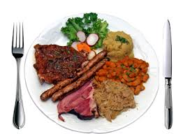

900+ ABENDESSEN SCHNELL & EINFACH | KOCHKARUSSELL-Ideen in 2021 | rezepte, einfache gerichte, essen
2021.06.24 14:33
ABENDESSEN SCHNELL & EINFACH | KOCHKARUSSELL
Sammlung von Kochkarussell | Schnelle und einfache Feierabend Rezepte • Zuletzt aktualisiert: vor 1 Tag
1,69Tsd. Pins • 72,01Tsd. FollowerHier findet ihr schnelle und einfache Rezepte fürs Abendessen. Jedes Gericht ist im Handumdrehen auf dem Tisch und perfekt nach einem langen Arbeitstag. Feierabendrezepte für jeden, gesund, leicht und lecker. Kochkarussell - dein Foodblog für schnelle und einfache Feierabendküche
Gnocchi-Pfanne mit grünem Spargel und Sahne-Sauce - Kochkarussell
· 8 Bewertungen · 20 Minuten ·Vegetarische Gnocchi-Pfanne mit grünem Spargel und Frischkäse-Sahne-Sauce. Dieses turboschnelle Spargelrezept ist super einfach & steht in nur 20 Min auf dem Tisch. Das perfekte 5-Zutaten Feierabendrezept! Cremig, würzig und super lecker. Kochkarussell - dein Foodblog für schnelle und einfacher Feierabend Rezepte.
Salat Rezepte Schnell Kochen Und Backen Rezepte Schnelle Rezepte Gesundes Essen Rezepte Essen Kochen Leckere Schnelle Gerichte Rezept Kartoffelgratin Warmes Essen Nudelsalat20-Minuten Tzatziki-Nudelsalat - Kochkarussell
· 7 Bewertungen · 20 Minuten ·20-Minuten Tzatziki-Nudelsalat. Super einfach und SO lecker. Für dieses schnelle Rezept braucht ihr nur eine Handvoll Zutaten. Unbedingt probieren - kochkarussell.com
Gefüllte Nudeln Super Einfach Rippchen Salat Mit Beilagen Saftig Herzhaft Abendessen Einfache GerichteBruschetta Nudelsalat (Super einfach!) - Kochkarussell
· 9 Bewertungen ·Bruschetta Nudelsalat. Dieses 7-Zutaten Rezept ist super einfach und perfekt für Picknick und Grillen - Kochkarussell.com
Nudeln Mit Tomaten Mozzarella Rezepte Nudel Rezepte Nudelgerichte Fleischfondue Rezepte Gebratenes Curry Rezepte Blumenkohl KochrezepteOne Pot Pasta mit Tomaten und Mozzarella - Kochkarussell
· 7 Bewertungen · 15 Minuten ·One Pot Pasta mit Tomaten und Mozzarella. Dieses 15-Minuten Rezept erfordert nur einen Topf und eine Handvoll frische Zutaten. Unbedingt probieren - kochkarussell.com
Einfacher Tomaten-Mozzarella-Nudelsalat - Kochkarussell
Einfacher Tomaten-Mozzarella-Nudelsalat. Dieser Nudelsalat Rezept ist in nur 20 Minuten vorbereitet, cremig lecker und perfekt zum Grillen oder für nächste Picknick. Der Nudelsalat ist leicht, super lecker und Meal Prep geeignet. Kochkarussell - dein Foodblog für schnelle und einfache Feierabendküche.
Einfacher Tomaten-Mozzarella-Nudelsalat - Kochkarussell
Einfacher Tomaten-Mozzarella-Nudelsalat. Dieser Nudelsalat ist in nur 20 Minuten vorbereitet, cremig lecker und perfekt zum Grillen oder für nächste Picknick. Das Rezept ist leicht, super lecker und Meal Prep geeignet. Kochkarussell - dein Foodblog für schnelle und einfache Feierabendküche.
Rote Linsen Bolognese Antipasti Selber Machen Italienische Antipasti Spitzkohl Hackfleisch Hackfleisch Auflauf Gesunde Rezepte Herzhaft Einfache Gerichte Essen Und TrinkenFeierabendküche leicht gemacht eBook - Kochkarussell
Werbung. Keine Lust einzukaufen kommt dir bekannt vor? Und dir fehlt abends immer die eine, alles entscheidende Zutat? Dann ist dieses eBook für dich! Mit dem Feierabendküche leicht gemacht eBook wird dein Alltag unglaublich viel einfacher. Denn du erfährst, wie du dich endlich ein für alle Mal vom Einkaufsstress verabschiedest. Also, unbedingt ausprobieren!
Nudelsalat Mit Tomaten Nudelsalat Mit Pesto Pesto Rezept Rouladen Nudel Rezepte Fingerfood Rezepte Mozzarella Rezepte Vegetarische Gerichte Gesunde Rezepte20-Minuten Caprese-Nudelsalat - Kochkarussell
· 7 Bewertungen · 20 Minuten ·20-Minuten Caprese-Nudelsalat. Super einfach und SO lecker. Für dieses schnelle Rezept braucht ihr nur eine Handvoll Zutaten. Unbedingt probieren - kochkarussell.com
Gesunde Salate Salate Gesund Vegane Hauptspeisen Beste Salatrezepte Essen Für Gruppen Nudel Rezepte Salat Rezepte Tortellini Rezepte Gegrilltes EssenEinfacher Falafelsalat (ohne Frittieren, vegan und schnell!) - Kochkarussell
· 9 Bewertungen · 35 Minuten ·Schneller Falafelsalat ohne Frittieren, Formen und Co! Dieses einfache Rezept ist ein frisches, gesundes und verdammt leckeres Gericht für Tage, an denen es schnell gehen muss. - Kochkarussell.com #falafel #salat #rezept #gesund #schnellundeinfach #kochka
Vegetarische Gerichte Leckere Gerichte Gebratener Reis Auberginen Nudeln Lecker Kochen Abendbrot Asiatische Rezepte GastronomieSchnelles Bratreis Grundrezept - kochkarussell.com
· 11 Bewertungen · 20 Minuten ·Das Bratreis Grundrezept ist schnell, einfach und verdammt gut. Knuspriger Bratreis, Ei, Karotten, Erbsen und Sojasauce und in 20 Minuten auf dem Tisch!
Räucherlachs Rezepte Nudelgerichte Rezepte Nudel Rezepte Kochrezepte Fischgerichte Lecker Kochen Backen Makkaroni MarmorkuchenPasta mit Frischkäse-Sauce und Räucherlachs - Kochkarussell
· 6 Bewertungen · 15 Minuten ·15-Minuten Pasta mit Frischkäse-Sauce und Räucherlachs. Herrlich cremig und so gut!
One Pot Rezepte Vegetarisch Rezepte Wenig Kalorien Veggie Rezepte Kalorienarme Rezepte Gesunde Rezepte Blumenkohl Rezepte Vegetarisch Grillen Vegetarische Küche Lecker Und Schnell11 schnelle und einfache Veggie One Pot Rezepte - Kochkarussell
11 schnelle und einfache Veggie One Pot Rezepte. Für alle Rezepte braucht ihr nur einen Topf oder eine Pfanne, wenig Zeit und bekommt dennoch die extra Ladung Gemüse und Comfort Food. Alle vegetarische Rezepte sind schnell gekocht, einfach und super lecker. Kochkarussell - dein Foodblog für schnelle und einfache Feierabendküche.
Vegetarische Gerichte Leckere Gerichte Ofenkartoffeln Mit Gemüse Rezepte Mit Feta Kuchen Rezepte Vegetarische Rezepte Vegetarisch Vegan Fischgerichte Brot BackenOfenkartoffeln mit grünem Spargel, Tomaten und Feta
· 31 Bewertungen · 50 Minuten ·Ofenkartoffeln mit grünem Spargel, Tomaten und Feta. Dieses schnelle Ein Blech-Rezept ist super einfach, gesund und sättigend! - Kochkarussell.com #schnellundeinfach #einblech #kartoffeln #spargel
Bunter Nudelsalat Balsamico Dressing Schnelle Salate Salate Zum Grillen Lecker Und Schnell Richtig Lecker Leckeres Essen Mahlzeit AbendessenWeltbester bunter Nudelsalat mit Balsamico-Dressing (30 Minuten!) - Kochkarussell
· 4 Bewertungen · 30 Minuten ·Bunter Nudelsalat mit Balsamico-Dressing. Unser liebstes Nudelsalat Rezept ist Meal Prep-geeignet, die perfekte Grillbeilage oder eine toller Picknick Blegleiter. Dazu ist er in 30 Minuten vorbereitet, schnell, einfach und super lecker. Kochkarussell - dein Foodblog für schnelle und einfache Feierabend Rezepte.
Vegetarische Gerichte Leckere Gerichte Vegetarische Rezepte Gesunde Rezepte Spinat Pasta Backen Desserts Schnell Schmecken Eating CleanTortellini mit Tomaten-Sahnesauce und Spinat - Kochkarussell
· 7 Bewertungen ·Tortellini mit Tomaten-Sahnesauce und Spinat. Dieses 8-Zutaten Rezept ist einfach, in 20 Minuten fertig und SO gut - Kochkarussell.com
Asiatische Küche Asiatische Rezepte Kokosmilch Rezepte Nudelgerichte Kichererbsen Rote Currypaste Kokos Curry Curry Rezepte Rezepte Mit HuhnSchnelles Chicken-Curry mit Kokosmilch (30 Minuten!)
· 80 Bewertungen · 30 Minuten ·OMG! Dieses einfache Chicken-Curry mit Kokosmilch ist das perfekte Feierabend Rezept! Nur 8 Zutaten und in 30 Minuten auf dem Tisch! Super lecker, einfach zuzubereiten und super cremig! Dieses Rezept gehört nicht ohne Grund zu den beliebtestem Rezepten im Kochkarussell. Unbedingte Nachkoch-Empfehlung! Kochkarussell - dein Foodblog für schnelle und einfache Feierabendküche
Datenschutz- 21 schnelle Rezepte für einen leckeren Feierabend .
- Kochbuch: Schnelles Abendessen | EAT SMARTER
- Schnelles Abendessen | Leckere Kochideen | Kitchen Stories
- Rezepte für ein schnelles Abendessen | Chefkoch.de
- Schnelle Mittagessen - 6 Rezepte unter 30 Minuten • Koch-Mit
- [Schnell & einfach] 3112 leckere Rezepte zum Abendessen .
- Gesunde-Abendessen-Rezepte | Swissmilk
- 2871 leckere Rezepte fürs Abendessen - REWE
- 900+ ABENDESSEN SCHNELL & EINFACH . - Pinterest
- Abendessen-Rezepte - einfach und lecker | DasKochrezept.de
- 21 schnelle Rezepte für einen leckeren Feierabend .
- Kochbuch: Schnelles Abendessen | EAT SMARTER
- Schnelles Abendessen | Leckere Kochideen | Kitchen Stories
- Rezepte für ein schnelles Abendessen | Chefkoch.de
- Schnelle Mittagessen - 6 Rezepte unter 30 Minuten • Koch-Mit
- [Schnell & einfach] 3112 leckere Rezepte zum Abendessen .
- Gesunde-Abendessen-Rezepte | Swissmilk
- 2871 leckere Rezepte fürs Abendessen - REWE
- 900+ ABENDESSEN SCHNELL & EINFACH . - Pinterest
- Abendessen-Rezepte - einfach und lecker | DasKochrezept.de
